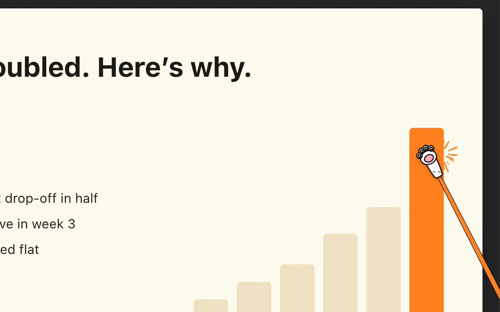
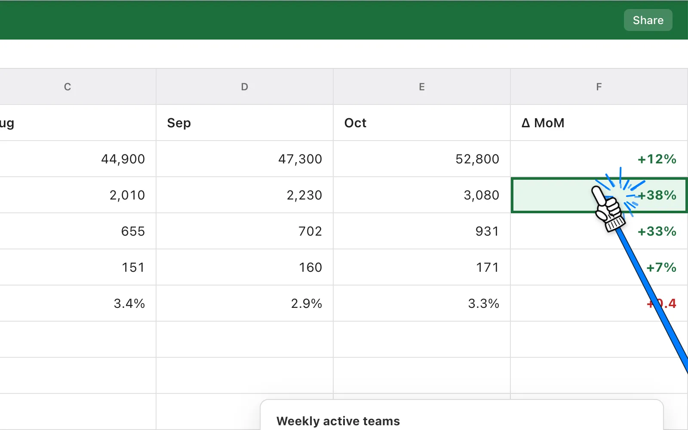
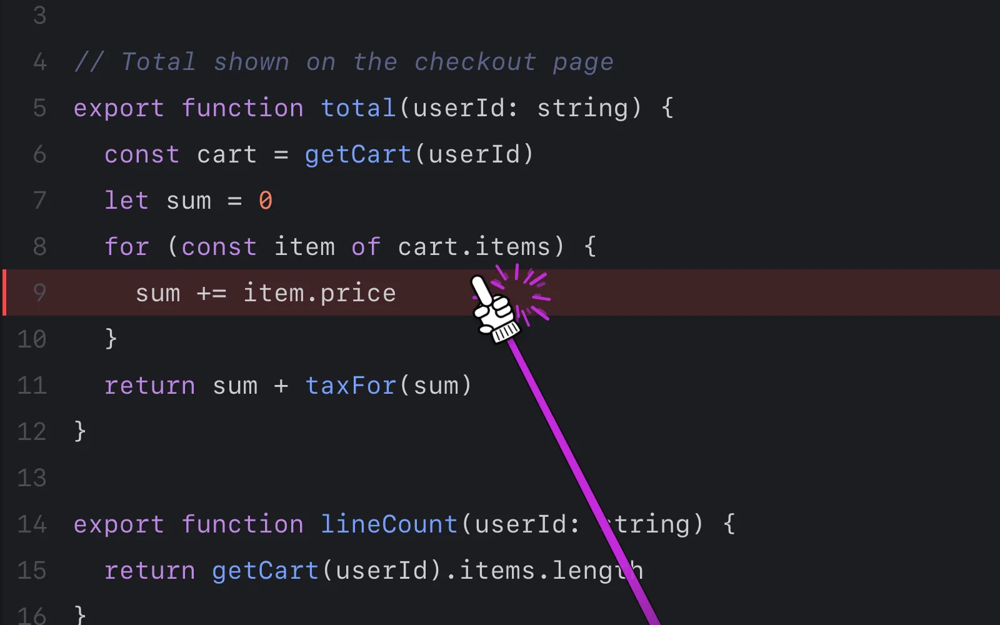
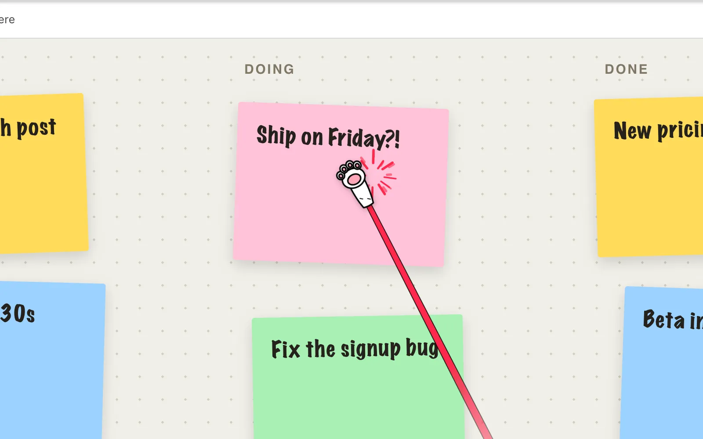

Point like you mean it.
Tapper swaps your pointer for a cartoon glove on a long, wobbly stick. Nobody watching your demo, call or recording will ever ask “wait, where are you pointing?” again.
Free forever · MIT open source · macOS 14 or later
Psst: up here, your pointer is a glove. Click to poke.Tap anywhere up here to poke.
Recorded from the real app on a Mac: three hands, a few colours, and what fast clicking does.
Zoom, Meet, Teams, OBS, whatever.
They’ll all see it*




*when you share or record your whole screen
Impossible to miss. On purpose.
-

A glove, not an arrow
The system arrow is hidden on every display. The glove follows your pointer, and its fingertip is exactly where you’re aiming.
-
A stick with a mind of its own
It hangs toward the bottom-right, fades out at the far end, and swings on a spring. Move fast and it lags and wobbles.
-
Three hands
Tiny hand with a pointing finger, Cat paw with pink beans, or Middle child, for the cheeky ones.
-
Click to poke
Every click jabs forward with comic impact lines. Click fast and the hits get bigger, all the way to a starburst.
-
Pointer mood
Five steps from “Shy finger” to “In your face”: size, stick length and how hard it pokes, all in one slider.
-
Hotkey ready
Show or hide the glove from any app. Your normal arrow comes straight back.
-
Presentation mode
Clicks only poke, they never reach the app underneath. The keyboard keeps working, so slides advance as usual.
-
Multi-display, recording-ready
Works across every display and shows up in screen shares and recordings, because it’s drawn on screen.
-
Scriptable
A
tapper://URL scheme lets Shortcuts, Raycast, Stream Deck or a shell script drive it.
Free forever · MIT open source · macOS 14 or later
FAQ
Is it really free?
Yes. Tapper is open source under the MIT licence: free to download, use, share and modify. The code is on GitHub.
How do I install it?
- Download Tapper.dmg and drag Tapper into Applications.
- Open it. Tapper lives in the menu bar. It is signed with a Developer ID and notarized by Apple.
- Turn the glove on. On first launch the glove is off. Choose “Show pointer” from the menu-bar icon, or press ⌃ ⌥ P.
Will viewers see the glove in screen shares and recordings?
Yes, when you share or record your whole screen. The glove is drawn on screen, so it appears there across all your displays. If you share a single window, the glove sits above that window and is not part of it.
Can I still click normally?
Yes. Only the look changes: clicks, drags and selections land exactly where the fingertip is. If you want clicks to only poke, turn on Presentation mode with ⌃ ⌥ T.
What permissions does it need?
Presentation mode needs Accessibility permission, because that is how macOS lets an app stop clicks from reaching other apps. macOS asks the first time you turn it on. If you never use Presentation mode, you never need to grant it.
Does it record anything?
No. Tapper draws a glove and reacts to your clicks so it can poke. It doesn’t record your screen, your keystrokes or what you click on. It’s open source, so you can read exactly what it does.
Can I control it from a script?
Yes. Tapper answers to tapper:// links, so Shortcuts, Raycast, Stream Deck, a shell script or a link in your slide notes can drive it.
open "tapper://show" # also: hide, toggle
open "tapper://poke"
open "tapper://presentation"
open "tapper://set?style=paw&mood=3&color=2&sound=off"set accepts style (tiny, paw, middle), mood (0 to 4), color (0 to 7, in the order of the colour menu: Black, White, Orange, Red, Pink, Purple, Blue, Green), sound and animate.
Which Macs does it run on?
Any Mac running macOS 14 or later. It’s a native Swift app and a universal binary, so it runs natively on both Apple silicon and Intel.